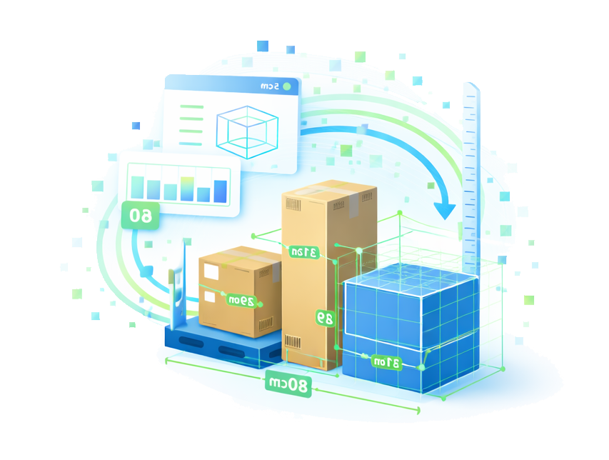

Gestión documental
Contratos, trabajadores, obras y control de vigencias.
Cubika centraliza datos, procesos y herramientas en una plataforma que se adapta a la forma en que trabaja tu empresa.
Empieza resolviendo lo que hoy genera más fricción y evoluciona incorporando nuevas capacidades cuando las necesites.
Información dispersa, procesos manuales, herramientas que no conversan entre sí y tareas que terminan convirtiéndose en cuellos de botella.
Cubika conecta esas piezas para que la información pueda moverse entre procesos y las herramientas respondan a las necesidades reales de tu operación.
No todas las empresas operan igual. Cubika tampoco debería obligarlas a hacerlo.
La base común donde se conectan datos, procesos, usuarios y herramientas.
Contratos, trabajadores, obras y control de vigencias.
Stock, movimientos, traspasos, etiquetado y control operacional.
Herramientas y flujos específicos para necesidades particulares.
Cada empresa puede incorporar los módulos que necesita y ampliar sus capacidades a medida que su operación evoluciona.
Cubika transforma información dispersa en una estructura sobre la que tu empresa puede operar con mayor claridad y control.

Integra información desde planillas, archivos, sistemas y fuentes que tu empresa ya utiliza.
Estructura y relaciona la información para que pueda utilizarse de forma consistente entre procesos.

Ejecuta los procesos que tu empresa necesita mediante módulos especializados y herramientas operacionales.
Obtén trazabilidad, visibilidad e información útil para tomar mejores decisiones.
Cubika incorpora módulos especializados para resolver procesos concretos, sin perder la conexión con el resto de la operación.

Registra ingresos, salidas y ajustes manteniendo un historial claro para controlar y conciliar el inventario.

Genera etiquetas operativas basadas en datos y requerimientos, listas para impresión, lectura e integración.

Detecta excedentes y faltantes entre sucursales para apoyar movimientos de stock que mejoren la disponibilidad.

Calcula volúmenes reales a partir de información validada para reducir errores y mejorar la planificación operacional.
No necesitas transformar toda tu operación de una vez.
Puedes comenzar resolviendo un proceso específico, incorporar nuevos módulos cuando aparezca una nueva necesidad y aprovechar la información que ya existe dentro de la plataforma.
Algunas necesidades son comunes. Otras son propias de cada empresa. Cubika puede adaptar procesos, flujos y herramientas sobre la misma plataforma.
Una base común. Soluciones específicas.
La tecnología debe adaptarse a la operación, no al revés.
Se integra a tus procesos y fuentes de información actuales.
Relaciona información para que pueda utilizarse entre distintos procesos.
Activa nuevos módulos y capacidades según evolucionan tus necesidades.
Convierte información operacional en control, trazabilidad y decisiones.
Cuéntanos qué proceso necesitas mejorar y exploremos cómo Cúbika puede convertirse en parte de tu operación.